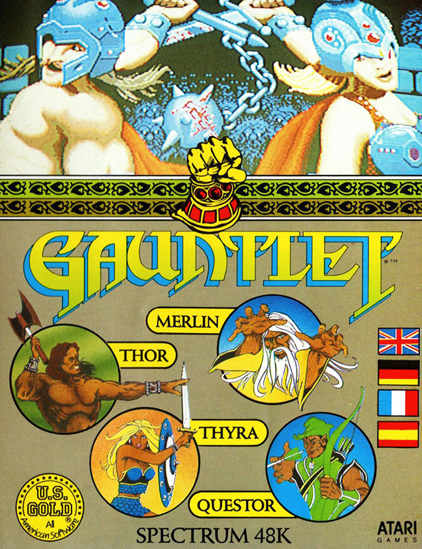
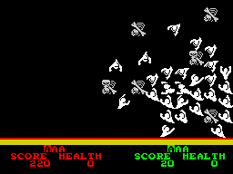

Gauntlet


{kind=link}

| Publisher: | US Gold |
| Price: | £8.99 |
| Year: | 1986 |
| Source: | CRASH, Issue 37 |

Gauntlet ‘The Official Conversion’ has at last appeared. The main difference between the arcade classic and this version, is that US Gold have produced a game for one or two players — whereas up to four combatants can enter the coin-op arena.
The package comes complete with extensive instructions to help Gauntlet novices who didn’t spend their formative years pumping coins into the arcade machine. The program is multi-load, with up to eight levels loading at a time.

his new assistant Mike Parkinson aren’t
too good at playing Gauntlet for the
camera: they’ve just snuffed it at the
hands of a host of ghosts!
To begin with, each player must choose one of the four characters, these are: Thor the Warrior, Thyra the Valkyrie, Merlin the Wizard, and Questor the Elf. Each has different levels of Strength, Armour and Magic Power. Strength determines how quickly a character can destroy opponents, Armour level determines the amount of damage a character sustains from a hit, while Magic Power affects the power of potions that are used. In a two player game, the pair of adventurers can work together, sharing the tasks between them and using their unique abilities to best effect.
The aim is to scurry around the spacious dungeons, blasting everything that moves and collecting as much food and treasure as possible. Keys must be found and collected so that locked sections of the dungeons can be entered and explored. While all this is going on, the exit to the next level must be located. Each dungeon consists of a maze of two-dimensional walls and doors, with exits to the other levels scattered about. At the start of each level a message details any special conditions that apply — for instance your shots stun your partner in some maze areas.
Characters begin with 2,000 health units, displayed on a counter at the bottom of the screen. Confrontations with the evil beings that inhabit the dungeons reduce health points, and death ensues when a character’s health rating reaches zero. In the two-player game, a character can rejuvenate a dead partner, who reenters with a zero score.
The dungeons are full of guards and demons waiting to do battle with intruders. Generators located in the mazes continually produce dozens of deadly denizens — unless they are quickly destroyed. Characters can either shoot the enemy or enter into hand-to-hand combat, which usually scores more points — at the expense of the loss of more energy. Hordes of opponents tend to congregate together in sections of the maze, just waiting for you to turn a corner or destroy a wall so they can get at you.
Ghosts are the most common opponents and hit a character once, drain some energy and then disappear: hand-to-hand fighting is pointless with spooks. Lobbers are sneaky fellows, throwing rocks and other heavy items over the maze walls. Demons spray fireballs which sap energy very rapidly. Grunts are armed with heavy clubs and run up to your character buffing away repeatedly. Sorcerers use their magic to defeat you, making themselves temporarily invisible and immune to your shots. Death is the toughest guardian of them all and can only be defeated by use of magic — the best approach is to avoid him altogether.
Food and drink (some of which is poisoned) can be collected to restore health and boost your score. Potions found in the mazes have a range of effects — some act as ‘smart bombs’, while special potions confer additional fighting or shooting ability, increase your character’s speed or improve magic power. All the collectable objects are picked up by walking over them, although potions can be shot, in which case their ‘smart bomb’ effect is reduced.
Points are awarded for each denizen despatched and for collecting objects. Every so often a bonus treasure room is encountered where the aim is to gather up all the treasure and escape before a time limit expires. Transporter pads appear on some levels, and stepping on one moves the player to another pad on the screen. As in the original game, some of the walls can be destroyed by repeated shots, while stepping on a trap makes a section of wall disappear.
CRITICISM
“Gauntlet has turned out to be a much better game than any of its clones. The programmers have managed to capture a lot of the spirit of the arcade machine — this version is nearly as playable as the original and far cheaper. Graphically Gauntlet is pretty run-of-the-mill. The sound is generally lame, the tune is instantly forgettable and the effects are dull and infrequent. Don’t be put off by these shortcomings — gameplay is where Gauntlet really picks up my marks: I could easily play it until the end. If you have been waiting for a decent game of this type to appear then I doubt that you’ll find better.”
BEN
“Hey wow! The biggest arcade hit that I never saw hits the Spectrum. Yeuch! What puny little graphics; but WOW! — what a game! This is just what Spectrum owners need: a proper, involved two-player game. Despite the fact that I am against most multi-load systems, it’s hardly surprising that Gauntlet has got one; it must be one of the biggest games about. If you’re only likely to play it on your own, than think before you splash out, but in two-player mode it’s hard to stay away from. Well done US Gold.”
MIKE
“At last the original game hits the streets (well the CRASH office anyway). This is just as playable as the arcade machine — and the conversion retains the fast screen scrolling. It even manages to keep the old ‘come on follow me’ feeling — if you’re playing with a friend co-operation is essential as the dungeon scrolls around the characters on screen and it’s easy to get trapped if you try to go your separate ways. Gauntlet is more of a shoot/pick ’em up game than any of its clones, and as such it contains much more fast action fun. Cancel all engagements for the next few months, Gauntlet has arrived!”
PAUL
COMMENTS
| Control keys: | Player 1/player 2 — 1/8 Up, Q/I Down, S/K Left, D/L Right, Z/M Fire, CAPS/SPACE Use magic |
| Joystick: | Kempston, Cursor, Interface 2 |
| Use of colour: | Adequate |
| Graphics: | Inevitably, a bit small |
| Sound: | Unremarkable |
| Skill levels: | One |
| Screens: | 512 scrolling levels |
| General rating: | This conversion is let down a little by the graphics and sound, but the gameplay more than makes up for such deficiencies |
| Presentation: | 90% |
| Graphics: | 77% |
| Playability: | 94% |
| Addictive qualities: | 94% |
| Value for money: | 91% |
| Overall: | 92% |